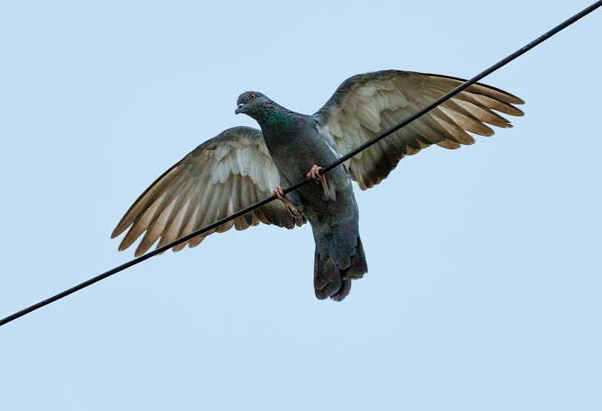
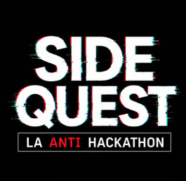

Los pájaros no existen. Son drones.
Y se cargan en los cables de la calle.
Levanten la mano.
Ningún animal duerme así. Un dispositivo en un cargador inalámbrico, sí.
Se orientan con un sonar. No "parecido" a un sonar: es un sonar.
Oscuras, frías, llenas de unidades colgadas. Eso es un data center.
"Decoración". Les estamos instalando las antenas nosotros mismos.
Ver slide anterior. No insistan.
Cada unidad en 300 metros a la redonda: distancia y rumbo, en tiempo real.
Hablamos su mismo idioma. Ellos no saben que somos nosotros.
Si una unidad se acerca, te enterás antes que ella.